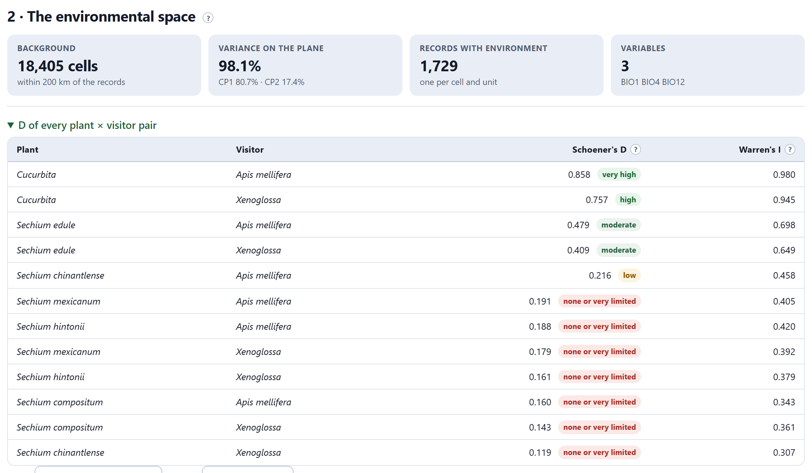
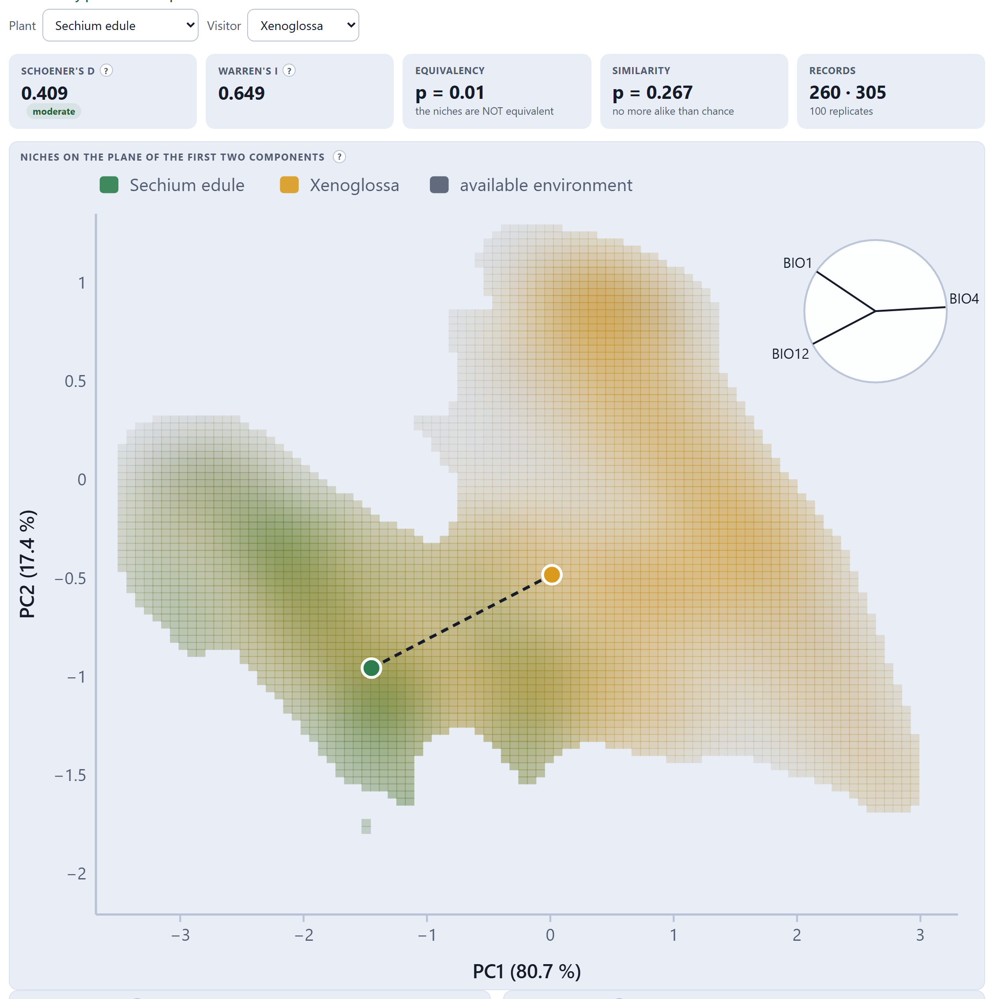
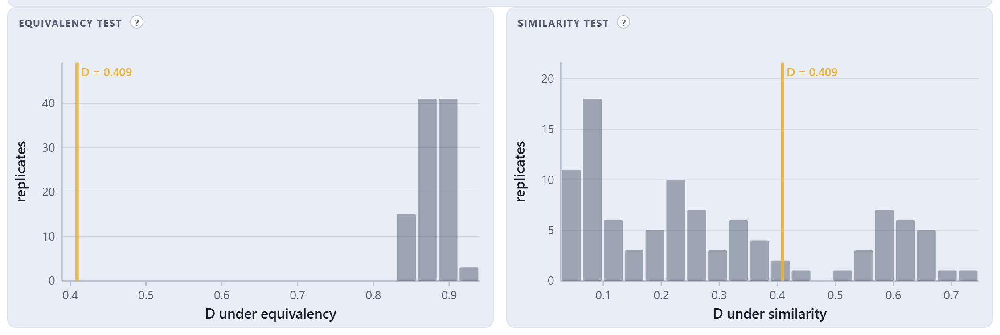
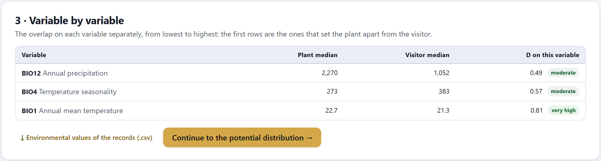

Do the plant and the visitor live in the same climates? They are compared in environmental space —the first two principal components of your layers—, correcting for what the region’s environment offers, with two randomization tests: whether the niches are identical, and whether they are more alike than the mere similarity of the environments would produce. Then, variable by variable, what sets the two apart.
Two species may live in different places and share a climate, or live close together and use different environments. For a pollination study, the second matters: if the visitor tolerates a narrower temperature range than the plant, there will be parts of the plant’s range where the visitor cannot live, even if today they share a region. And climate change moves each species according to its own niche.
1) The background cells —the available environment— are summarized with a principal component analysis of the standardized variables. 2) The records of each unit are projected onto the first two axes. 3) On a 100 × 100 grid of that plane, the density of the records and that of the background are estimated with a Gaussian kernel; the density of the records is kept only where there is available environment and, if requested, divided by that of the background. 4) Schoener’s D and Warren’s I compare the densities of the two units, from 0 (niches with nothing in common) to 1 (identical). 5) The equivalency test shuffles the records at random between the two units; the similarity test moves the visitor’s niche to a random place in the background; both are repeated many times (Warren et al. 2008).
The block works with your layers: GeoTIFF (.tif) or ASCII grids (.asc), in degrees, preferably all at the same resolution. You pick them with Choose files… or, more conveniently, Choose a folder…. Each layer is read only within the window that covers the records plus a margin (3° by default): a global layer at 30″ has 933 million cells and the study needs a few million, so the reader decompresses only that window. If a layer has a different grid from the first, it is resampled to the grid of the first and the table says so.
The app brings no real climate layers: the global climate databases do not allow redistributing their files, and they are downloaded once from their site (the 19 bioclimatic variables, at 10′, 5′, 2.5′ or 30″). For learning, the drop-down No layers, or just practicing? Fictional layers generated by the program loads, with Load the practice layers, four invented layers for Mexico and Central America (Section I.7).
| Part of the card | What it does |
|---|---|
| The table of layers | The Use box decides which variables go in; the name is recognized from the end of the file name (…bio_1 → BIO1, with its long name) and elev, alt or dem → Elevation. The ✕ removes one layer; Remove all, all of them. |
| Correlation between the variables in use | Pearson’s r between each pair of variables over the cells of the area (a sample of up to 20,000). Those beyond |r| = 0.8 show in red. In the practice layers, none: the largest is −0.77 (BIO4 with BIO12). |
| Elevation from a layer | With an elevation layer chosen, Fill in the elevation of records that lack it reads it at the point of each record without elevation. Records that carried their own keep it. Block 6 uses it right away (Figure 6.6). |
| If two variables have |r| > 0.8 | then keep one: the principal component analysis absorbs the correlation, but two nearly identical variables give double weight to what they measure. |
| If you do not know which ones to choose | then choose a few that make sense for the biology of the pair: mean temperature, seasonality, annual precipitation and dry-season precipitation are usually enough for plants and bees. |
| If your records come from GBIF with unknown precision | then 2.5′ or 5′ is a reasonable resolution; 30″ only makes sense with GPS coordinates. |
| Control | What it does |
|---|---|
| Background | Cells near the study’s records (within the chosen distance, 200 km by default) or the whole area of the layers. The background is the environment that was within reach of the species: the principal components and the density of the available environment are computed on it. |
| Density | Of the records (the default) or corrected by the environment: dividing by the density of the background corrects for a very common climate gathering records just because it is common, but it amplifies the edges of the available space, where there are few cells and a single record weighs a lot. |
| Test replicates | 50, 100, 200 or 500. With 100, the smallest possible p is 1/101 ≈ 0.01; for publication, 500. |
| Compute the environmental space | Builds the background, the principal component analysis, the densities and the tests of every pair. |
A background that is too wide includes environments that were never within reach of the species and makes the niches look more alike than they are. State the background in the methods and, if you can, report the result with two backgrounds (for instance, 200 km and the whole area). The same goes for the density: if the two versions give similar D values and the same conclusions, the result is robust.

The records with environment are one per cell and unit: ten records of the same species in the same 11-km cell say the same thing about the climate and must not weigh ten times. The table D of every plant × visitor pair gives the first reading: Cucurbita shares much of its niche with both visitors (D = 0.86 and 0.76); the wild relatives with small ranges, almost nothing.

In Figure 7.3, BIO4 (seasonality) points to the right and BIO12 (rainfall) down to the left: the first component runs from rainy, weakly seasonal climates to dry, seasonal ones. The practice chayote occupies the rainy part and Xenoglossa extends toward the dry part: D = 0.409, moderate.

| Test | Question | Chayote × Xenoglossa |
|---|---|---|
| Equivalency | Are the two niches identical? If the observed D is smaller than almost all those of the random shuffles (p < 0.05), they are not equivalent. | p = 0.01 · the niches are NOT equivalent |
| Similarity | Are they more alike than the mere similarity of the available environments would produce? If the observed D is larger than almost all those of the randomly moved niches (p < 0.05), they are more alike than chance: there is niche conservatism. | p = 0.267 · no more alike than chance |
“In the space of the first two principal components of the environment (98.1% of the variance), the niche of Sechium edule overlapped moderately with that of Xenoglossa (D = 0.41; I = 0.65). The equivalency test rejected that the niches were identical (p = 0.01), and the similarity test did not indicate that they were more alike than expected from the available environments (p = 0.27; 100 replicates each; Warren et al. 2008; Broennimann et al. 2012).”
Again: these are the numbers of the practice layers, useful for learning how to write it up.
| If equivalency p < 0.05 and similarity p < 0.05 | then the niches are not identical, but they are more alike than the environments explain: they share preferences. |
| If equivalency p < 0.05 and similarity p ≥ 0.05 | then the niches differ and their resemblance goes no further than that of the environments: each uses the climate in its own way (the case of the example). |
| If equivalency p ≥ 0.05 | then you cannot reject that the niches are identical. With few records the test has little power: say how many there were. |

The first rows are the ones that set the plant apart from the visitor: the variable worth thinking about when looking for where the relationship might break. ⤓ Environmental values of the records (.csv) downloads, as environmental_values.csv, for each record with environment, its unit, its coordinates, its position on the two components and the value of each variable.
| Message | What it means and what to do |
|---|---|
| There are no .tif, .tiff or .asc files in the selection | The folder or the files are not layers. Check the extension. |
| An error reading a layer (format, compression) | The reader accepts GeoTIFF with or without LZW, Deflate or PackBits compression, classic or BigTIFF, in strips or tiles, and ASCII grids. A layer in meters (projected) will not do: reproject it to degrees. |
| the layer does not cover the study area | The layer does not overlap the records. Check that it is in degrees and that it covers the area. |
| N pairs with |r| > 0.8 (in red)… | Two nearly identical variables. Keep one of each pair (rule of Section 7.2). |
| At least two layers in use and a background with valid cells are needed | Tick at least two variables, or widen the background distance. |
| These are fictional layers: for practicing, not for drawing conclusions or publishing | The practice layers were loaded. The Block 10 report repeats it in its niche section. |